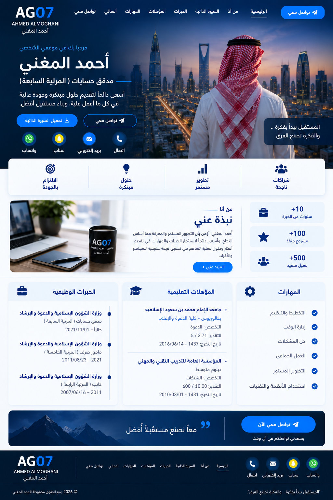

وزارة الشؤون الإسلامية والدعوة والإرشاد
مدقق حسابات (المرتبة السابعة)2021/11/01 – حالياً
أسعى دائماً لتقديم عمل دقيق ومنظم، وتطوير خبرتي المهنية والتقنية وبناء مستقبل أفضل.

أحمد المغني، أعمل في وزارة الشؤون الإسلامية والدعوة والإرشاد. امتدت مسيرتي المهنية من الأعمال الكتابية إلى أعمال الصرف ثم التدقيق المالي، مع اهتمام مستمر بالتطوير والتنظيم والاستفادة من التقنية.
2021/11/01 – حالياً
2011/08/23 – 2021
2007/06/16 – 2011
كلية الدعوة والإعلام · 2016
2010